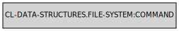

File System Reference
This section contains reference of all the functions, classes and macros in the CL-DS.FS package. Those functions act primarly as a simple bridge between files in the operating system and the functions with names in the algorithms package.
Symbols in the package CL-DATA-STRUCTURES.FILE-SYSTEM:
LINE-BY-LINE
Lambda List:
(PATH)
Description:
Opens a text file, and allows reading it line by line.
Returns: Forward range. Provides access to each line in the file stored as a string.
Exceptional situations:
- Signalling error from a callback during traverse will close the inner stream automaticly.
- Signals errors just as CL:OPEN does or UIOP:LAUNCH-PROGRAM (if instead of file path COMMAND object has been passed.
Notes: Stream is opened lazily. Calling either TRAVERSE or ACROSS on the line-by-line range will automaticly close the inner file (in exception safe way). This makes it suitable to use with the aggregation functions without additional code.
COMMAND
Lambda List:
(FORMAT-CONTROL-STRING &REST FORMAT-ARGUMENTS)
Description:
This function contructs COMMAND object which can be then passed to functions in this package expecting name, for instance LINE-BY-LINE. Passed argumement will be passed to UIOP:LAUNCH-PROGRAM and the process-info-output stream will be used as it would point to a normal file.
Returns: COMMAND instance.
Exceptional situations:
- Signals the type error if format-control-string is not of the type STRING.
Notes:
- This is particulary useful in conjuction with LINE-BY-LINE, unix tools, and aggreation functions in CL-DS as it allows to combine useful tools present in the unix system (like for instance xz) with CL-DS.ALG:ON-EACH, CL-DS.ALG:GROUP-BY, and different kinds of aggregation functions to quickly handle data processing tasks.
- Returned COMMAND instance is immutable and can be safely passed as input multiple times
COMMAND

Description: Instances of this class can be passed to functions in cl-ds expecting a file path (like for instance LINE-BY-LINE).
FIND
Lambda List:
(DESCRIPTION)
Description:
A function somewhat similar to the posix find tool. Depending on the filesystem content and the DESCRIPTION list, returns a forward-range containing pathnames matching the DESCRIPTION list. DESCRIPTION list supports :directory, :regex-file, :regex-directory, :file, :all-directories and :all-files filters. Type of the filter is supplied as the first element, rest of the specifies the additional options in the form of the plist (:PATH, :PREDICATE etc.). Each of those filters selects matching nodes in the file system and handles it to the next filter. The complete DESCRIPTION list usually looks `((:directory :path
Returns: Forward range. Contains paths to the matched files.
Notes:
- DIRECTORY, This filter is used to specify directory by :PATH.
- REGEX-DIRECTORY, This filter is used to specify directory by PPCRE in the :PATH. Directories with a maching name will be accepted. Can enter directories recursivly and the argument controlling behavior is :TIMES. By default 1, meaning it enters into directories once. Can be set to NIL in order for a unlimited recursive descent.
- FILE, This filter is used to specify file by name supplied in :PATH.
- REGEX-FILE, This filter is used to specify file by PPCRE in the :PATH. Files with a matching name will be accepted.
- ALL-DIRECTORIES, Recursivly selects all directories in the directory returned by the previous filter. Follows symlinks.
- ALL-FILES, Selects all files in the directory returned by the previous filter. :PREDICATE can be used to supply filtering function.